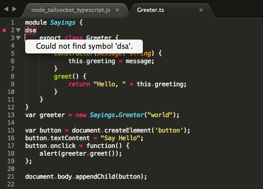

TypeScript1.0でた + どこかから要望があったのでupdateしたよ
概要
Sublime Text でTypeScriptをコンパイルしたりエラー表示したりする機構を更新した。

保存(⌘ + s)すると、コンパイル処理を走らせて、エラーがあればコード上に表示する。
サンプルプロジェクト付きの一式はこちら。
https://github.com/sassembla/SublimeSocket3/tree/master/tool/nodeTailSocket/TypeScript
SublimeSocketとは
Sublime Text のAPIを外部から呼べる機構。
事前にFilterを喰わせることで、どんなときにどんなAPIが呼べるか、といった動作を規定できる。
こんなの
https://raw.githubusercontent.com/sassembla/SublimeSocket3/master/samples/rubySample/rubyFilter.txt
DSLとしてSushiJSON
https://github.com/sassembla/SushiJSON
を使っている。
NodeTailSocketとは
SublimeSocketに対してWebSocket Client として接続できるnodeのコード。
特定のファイルをtailして、その内容をwsに乗せて送りつけられる。
SublimeSocketのtoolに入ってる。
以上。